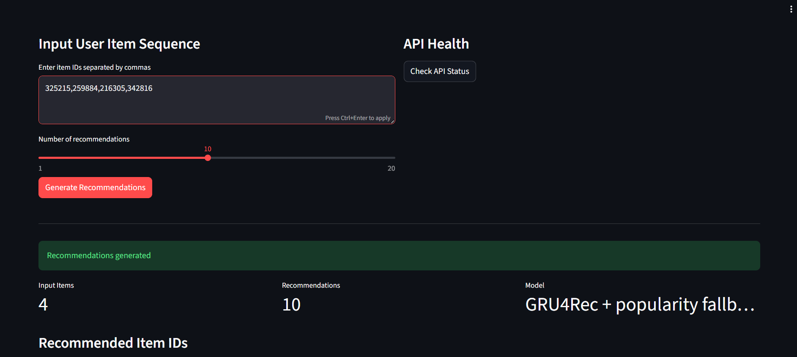
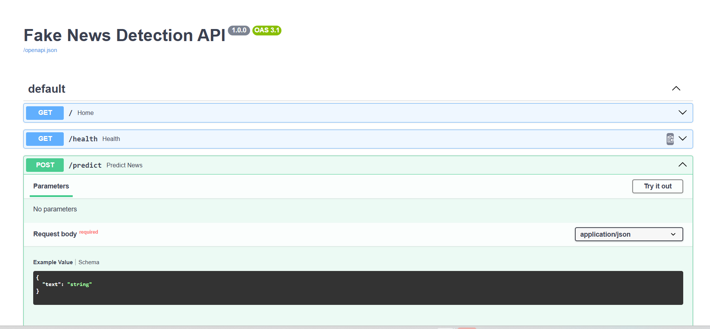
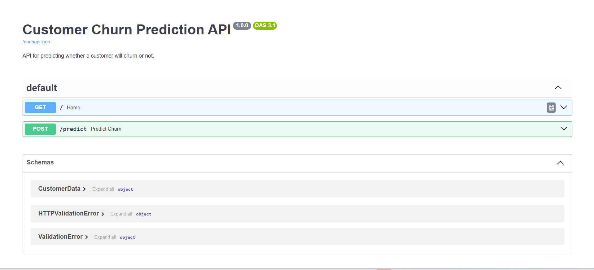
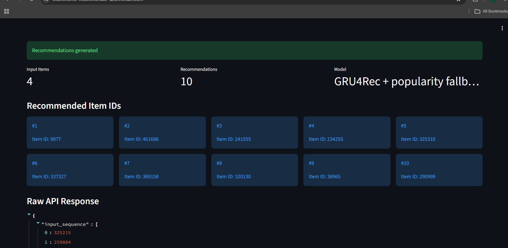
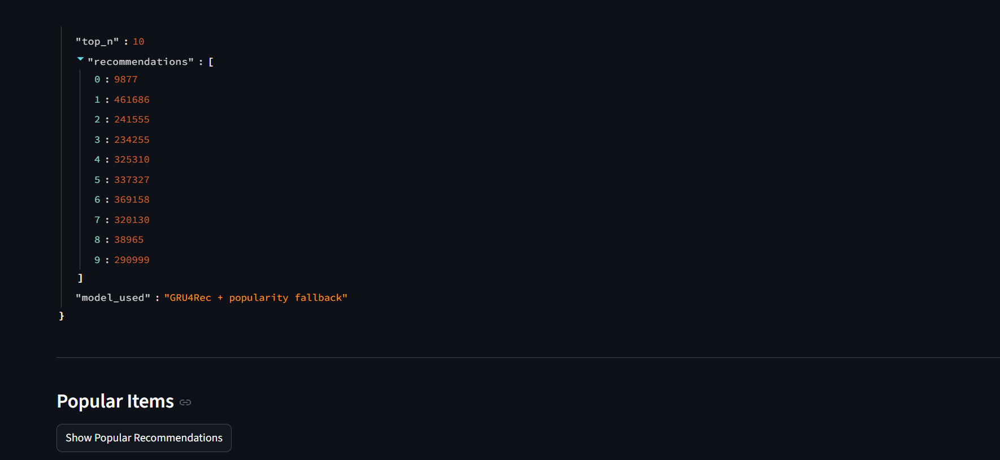
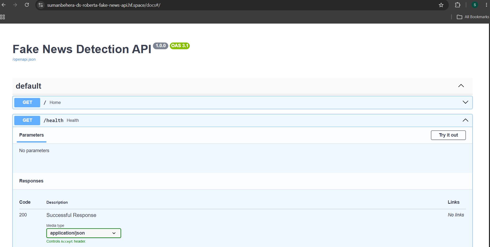
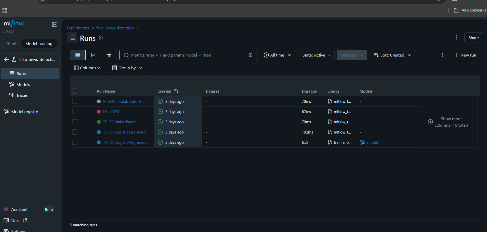
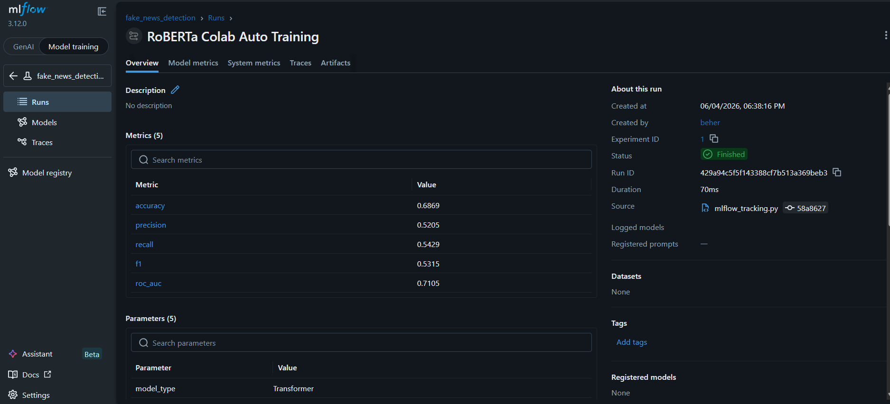
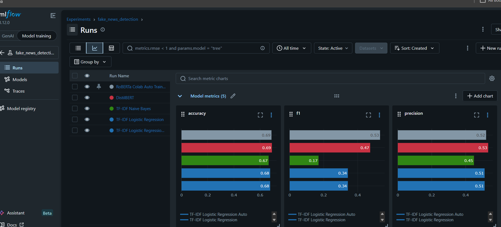

Open to Data Scientist / ML Engineer roles
Suman Behera
|
I build and deploy machine learning systems using Python, PyTorch, FastAPI, Docker, MLflow, and DVC.
About
Machine learning systems, not notebook-only projects.
MCA graduate focused on Data Science, Machine Learning, NLP, Recommender Systems, and MLOps. I build deployed ML systems that move from data preparation and model training to API serving, Dockerized deployment, and experiment tracking.
My strongest work includes a hybrid e-commerce recommender, a transformer-based fake news classifier, and a reproducible customer churn MLOps pipeline.
Current focus
- Production ML pipelines
- FastAPI model serving
- Docker and cloud deployment
- Applied AI systems
- Recommender systems and NLP
Featured Projects
Deployed projects with measurable engineering outcomes.



Evidence
Screenshots from deployed APIs, UI, and experiment tracking.






Skills
Focused stack for Data Science, MLOps, NLP, and recommendation systems.
Languages & Data
Python, SQL, Pandas, NumPy, Scikit-learn
Machine Learning
Regression, Classification, XGBoost, Gradient Boosting, Model Evaluation
Deep Learning & NLP
PyTorch, TensorFlow, Hugging Face, DistilBERT, RoBERTa
Recommender Systems
Collaborative Filtering, NCF, GRU4Rec, Implicit Feedback, HR@10
MLOps & Deployment
Docker, FastAPI, MLflow, DVC, GitHub Actions, Render, Hugging Face Spaces
Tools
Git, GitHub, VS Code, Jupyter Notebook, Google Colab, Linux, MySQL
Journey
Project-driven learning timeline.
MLOps foundation
Built reproducible churn prediction with DVC, MLflow, FastAPI, Docker, and GitHub Actions.
Recommender systems
Implemented baseline, collaborative filtering, NCF, GRU4Rec, and lightweight deployment strategy.
Transformers and NLP
Fine-tuned RoBERTa variants, tracked experiments, and deployed inference on Hugging Face Spaces.
Portfolio proof
Integrated live links, screenshots, certificates, and repository evidence into a professional portfolio.
More Repositories
Additional GitHub projects and learning proof.
Content-Based Movie Recommendation App
Movie recommender using content-based filtering, cosine similarity, and TMDB poster retrieval.
RecommendationScikit-learnFlask
GitHubPatient Management REST API
FastAPI backend for managing patient records with structured JSON data and API endpoints.
FastAPIBackendPython
GitHubPython Voice Assistant
Voice assistant with speech recognition, text-to-speech, website launching, music playback, and AI responses.
PythonAutomationAI Assistant
GitHub100 Days of Python Practice
Daily Python practice repository focused on consistent coding, problem solving, and mini-project building.
PythonPracticeProjects
GitHubfreeCodeCamp Machine Learning Projects
Project suite completed for freeCodeCamp Machine Learning with Python certification.
MLTensorFlowPython
GitHubfreeCodeCamp Data Analysis Projects
Data analysis project suite covering statistics, visualization, time series, and regression tasks.
Data AnalysisPandasVisualization
GitHub
Certificates
Verified learning credentials.
HackerRank SQL BasicSQL certification
HackerRank SQL IntermediateSQL certification
HackerRank SQL AdvancedSQL certification
freeCodeCamp ML with PythonMachine learning projects
freeCodeCamp Data AnalysisData analysis projects
Kaggle Intro to MLIssued May 25, 2026
Cisco Python Essentials 1Cisco Networking Academy
IBM Python 101 for Data ScienceCognitive Class / IBM
Resume
Download the latest resume PDF.
Focused one-page resume covering ML systems, MLOps, NLP, recommendation systems, education, and certificates.